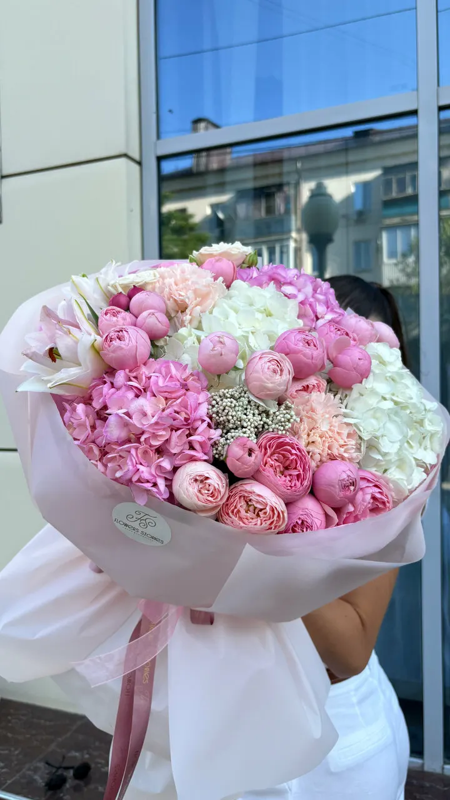
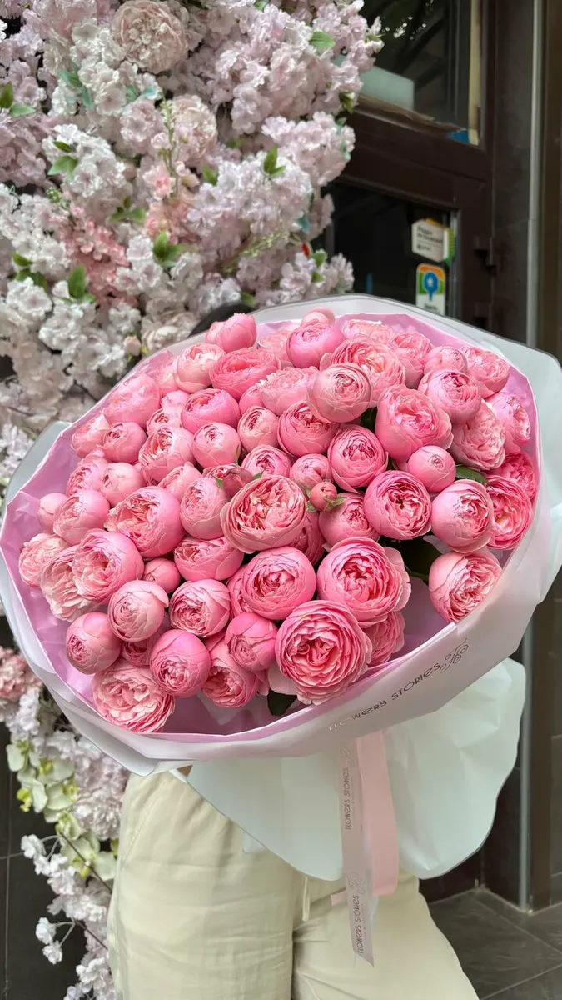
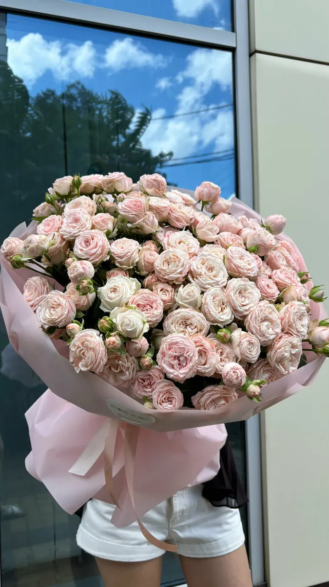
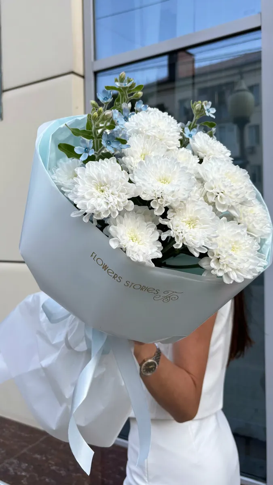

Цветочный магазин в Краснодаре · букеты и композиции
Букеты и цветы в Краснодаре: готовые и на заказ
Готовые букеты и сборные композиции. Флорист поможет с выбором, а в магазине можно взять подарок к букету.

- Рейтинг 5,0 на Яндекс.Картах
- 206 отзывов
- Готовые и сборные букеты
Цены с карточки
Цены с карточки на Яндекс.Картах. Точный состав и сумму уточняйте при заказе.
Букеты
- Букет Silvaот 15 500 ₽
- Букет с премиум составомот 18 500 ₽
- Другой букет по вашему бюджетууточнить
Другие букеты и стоимость доставки уточняйте при заказе.
Как заказать
- 01
Повод и бюджет
Напишите, для кого букет и на какую сумму.
- 02
Состав
Флорист подскажет варианты и состав.
- 03
Время
Согласуем время доставки или самовывоза.



Как работаем
Флорист поможет
Подскажет по составу и посоветует, как лучше сделать.
Свежие цветы
Покупатели отмечают свежесть и красоту готовых букетов.
Подарок к букету
В магазине можно выбрать подарок к цветам.
Контакты
- Адрес
- улица Хакурате, 3, Краснодар
- Часы
- Пн–Ср 09:00–22:00, остальные дни – по телефону
- Телефон
- +7 (918) 977-68-66